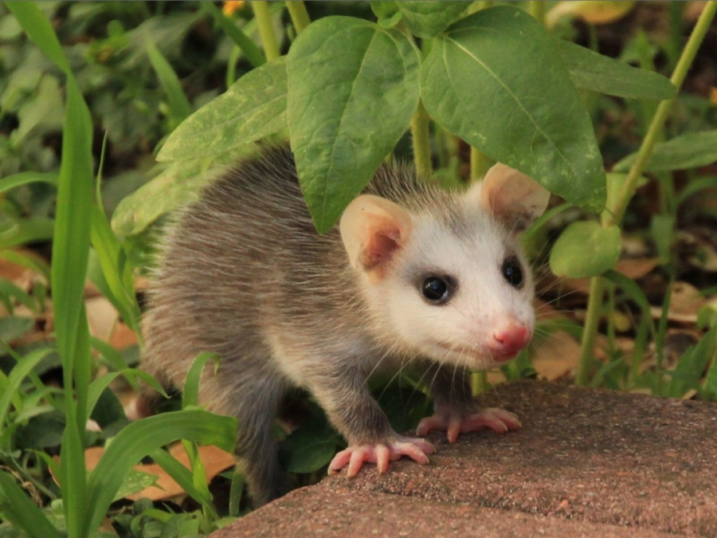

TLACUACHE

< El tlacuache es un mamifero marsupial de la familia Didelphidae. Se encuentra principalmente en america desde el sur de Canada hasta Argentina. Es conocido por su aspecto peculiar y su capacidad para colgar de su cola. Ademas cuenta con una amplia distribucion geografica, lo que le permite adaptarse a diferentes tipos de habitats. pagina principal